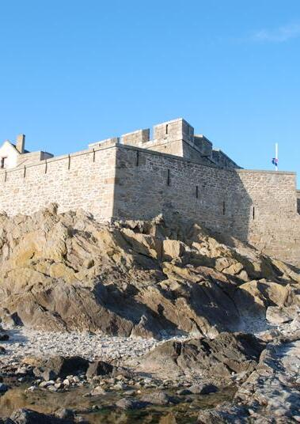

La cité corsaire, ville natale de Jacques Cartier, de Chateaubriand, de Lamennais, Duguay-Trouin, Mahé de la Bourdonnais, Surcouf et de tant d’autres hommes illustres, vous attend. À travers ses rues, qui ont gardé le pittoresque et le charme de l’ancienne cité, partez à la recherche des souvenirs et vivez l’aventure des marins héroïques de jadis. Imaginez la prudence audacieuse des armateurs et négociants des siècles passés et la ténacité tranquille des bourgeois malouins sur qui reposait la sécurité de tous.
Au VIè siècle, un ermite du nom d’Aaron vivait sur le rocher avec quelques moines qui partageaient leur temps entre la prière et l’évangélisation des populations voisines. C’est là qu’accosta le moine Mac Low. Il fut élu évêque d’Aleth, la cité voisine. Plus tard, les reliques de Malo furent transférées sur le rocher. C’est alors que le rocher d’Aaron fut désigné sous le nom de Saint-Malo-de-l’Isle. Le commerce maritime connait une rapide expansion. Les négociants malouins se lancent dans des entreprises hardies en commerçant avec plusieurs nations maritimes européennes. Dès 1234, des navires sont armés en course contre les anglais.